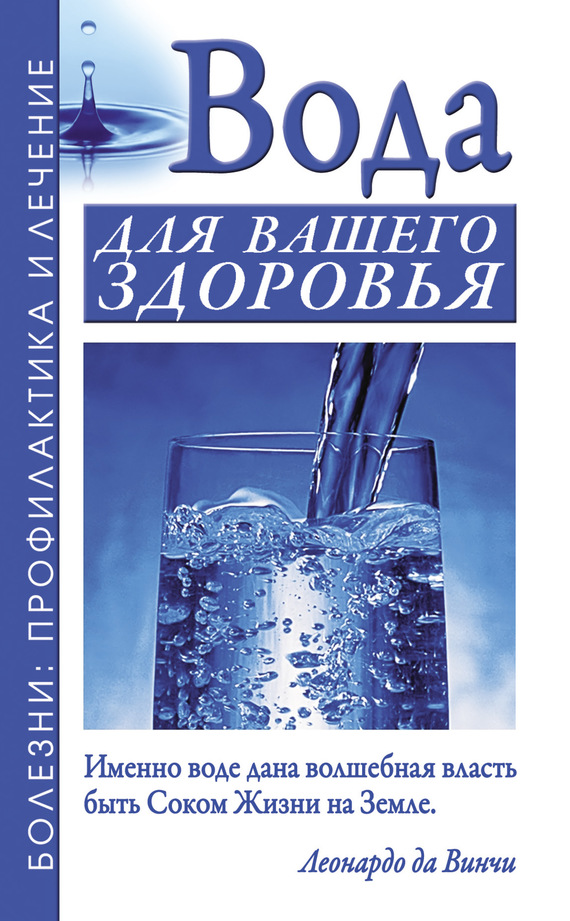

Что такое вода.

По материалам книги "Вода для вашего здоровья"" Александра Николаевича Джерелей и Бориса Николаевича Джерелей . "
А также из других источников Интернет
Уважаемый Читатель - после ознакомления с Книгой
рекомендую Вам заказать ее бумажное издание.
Эта книга о том, как сохранить и восстановить здоровье простейшими и вполне доступными способами. В частности, мы расскажем о целительной силе воды и различных методах оздоровления с ее помощью. Это и различные водолечебные процедуры, обертывания, обливания, ингаляции, ванны, бани, прием минеральной воды и многое другое. При правильном применении вода оказывает поистине потрясающий лечебный эффект. Однако и здесь нужно быть очень осторожным. С ее помощью в одних случаях вы сможете справиться с болезнью сами, в других – вам несомненно потребуется помощь специалиста. К примеру, одним людям подходит для лечения минеральная вода «Ессентуки 17», а вот для других она может оказаться не только бесполезной, но и противопоказанной. Поэтому всегда необходимо выяснить у врача, какой именно способ водолечения нужен конкретному человеку.
Книга адресована широкому кругу любознательных читателей.